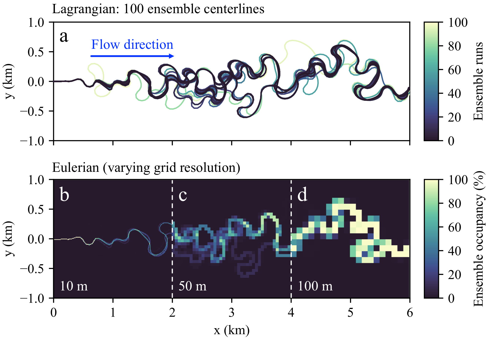

Lowland rivers are dynamic systems whose evolution is largely governed by the gradual growth of meander bends and episodic cutoff events that abruptly reshape its geometry. We asked a simple question: are cutoffs enough to make river evolution chaotic?
To test this, we ran pairs of simulations using meanderpy, a kinematic meander model where lateral migration is driven by curvature. Each pair starts from nearly identical initial conditions and simulate 10,000 years of evolution.
The challenge is that the river geometry changes length over time, so we can't directly compare two Lagrangian state vectors. Instead, we map each centerline onto a fixed Eulerian grid of binary cells: channel (1) or floodplain (0), which gives us a fixed-dimensional state for comparison.
Figure 1. (a) 100 ensemble centerlines in Lagrangian form. (b–d) The same state mapped onto Eulerian grids at 10 m, 50 m, and 100 m resolution.
We measure divergence between two runs using the Hamming distance \(d_H(t) = \|\mathbf{S}^*(t) - \mathbf{S}(t)\|_1\), which counts the number of grid cells that differ. If this grows exponentially, the system is chaotic. The rate of growth is the finite-time Lyapunov exponent:
\[\lambda_{\text{FT}} = (t_2 - t_1)^{-1} \ln\!\left[\frac{d_H(t_2)}{d_H(t_1)}\right]\]The result is clean. With cutoffs disabled, the two trajectories remain identical — \(d_H(t) = 0\) for the entire run. With cutoffs enabled, they diverge exponentially. The video below shows this divergence in action:
Figure 2. Interactive Eulerian occupancy heatmap of 100 ensemble simulations with cutoffs enabled. Drag the grid slider to change resolution continuously (10–100 m); scrub through time to see trajectories diverge.
The Lyapunov exponent converges with grid refinement, is insensitive to perturbation magnitude, and is consistent across different initial planforms. It scales with migration rate but is invariant to the cutoff threshold. In short: cutoffs alone are sufficient for chaos, and they impose a finite predictability horizon on river planform evolution.
By Brayden Noh (Harvard, Dept. of Earth and Planetary Sciences) and Omar Wani (NYU Tandon School of Engineering).